My site will consist of a front page and 5 similarly-structured sub-pages that represent the different stages of the entire birth process:
The entire website will have the same collapsable Navbar at the top with the site logo and links to Home (the front page) and each sub-page. The logo will also be the background and will remain stationary while the rest of the content scrolls across the screen.
A welcome message from my wife that gives a little information about herself and why she created the website. It also includes a brief explanation about what you'll find in this website.
This section will contain a simple way to get in touch with my wife. It will include a space to enter name, email, and a brief message to get in touch with her. It will also include website creation credit to me with my professional email and links to my social media profiles.
The same Navbar and background as the front page.
This section will have a personal message from my wife relevant to the birth stage that the sub-page is about. It will include text and a circular picture.
This section will have two lists next to each other: one with questions and considerations to discuss with your Endocrinologist, and another with questions and considerations to discuss with your Obstetrician/Gynecologist.
This section will include 4 cards next to each other with a factual question on each one. When you click on the card, it will flip over and reveal the answer. When you click on it again, it will flip back the opposite way to reveal the question again.
This section will have a list of resources used with links to external web pages, podcasts, etc. There will also be an embedded youtube video next to the text that is helpful.
Finally, the footer will include a short recipe that is relevant to the birth stage with a link crediting where it was gotten from.
 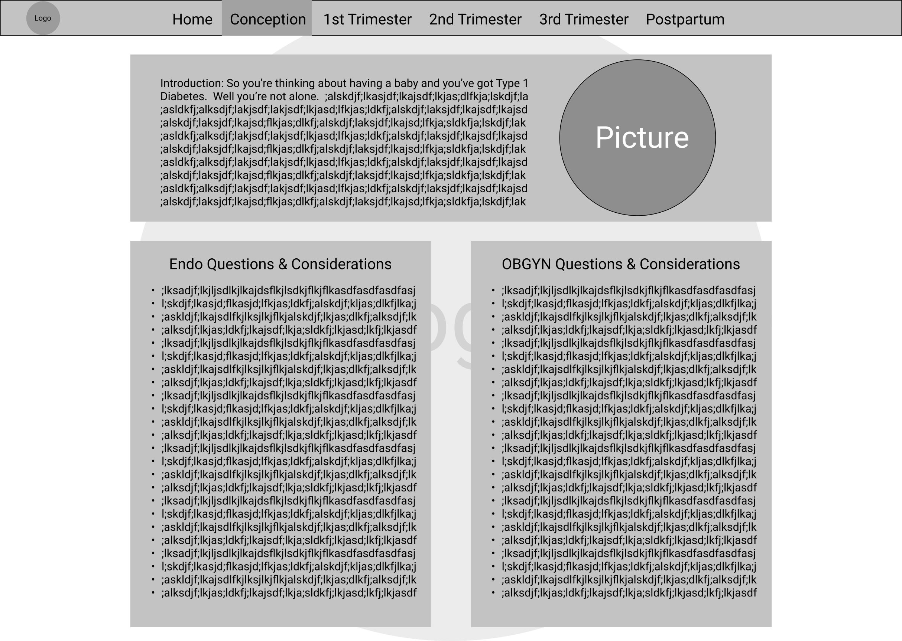
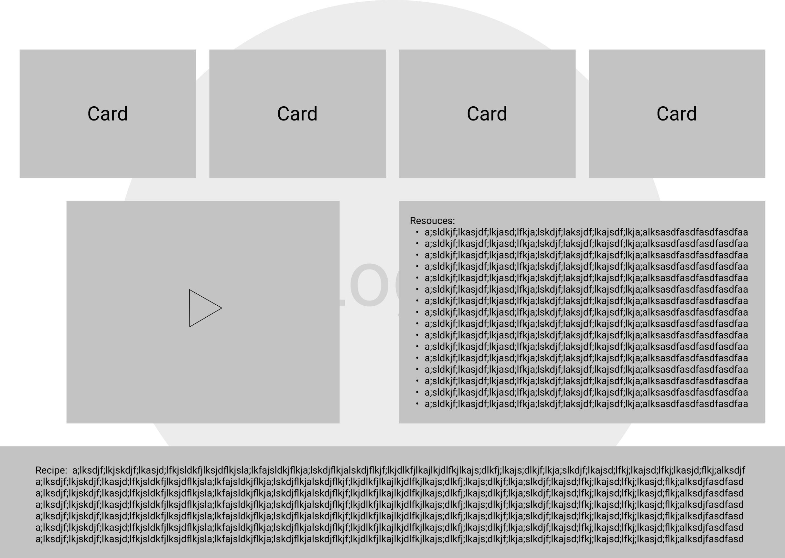
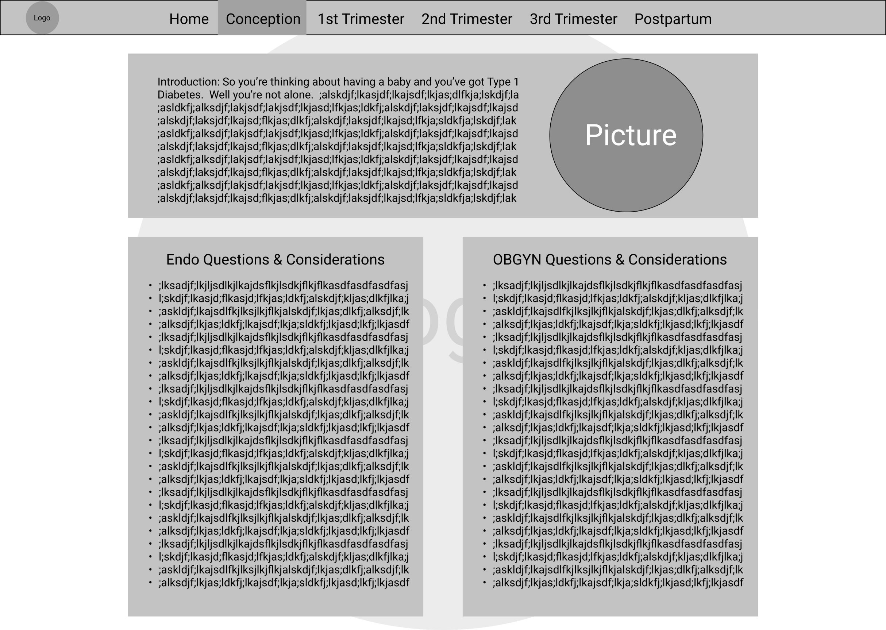
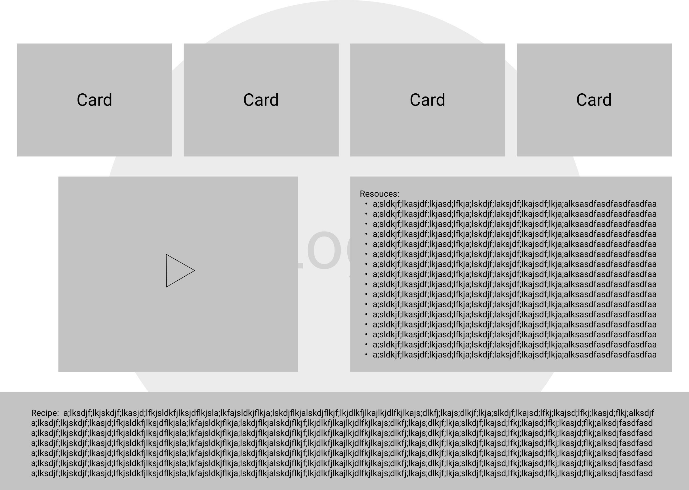

 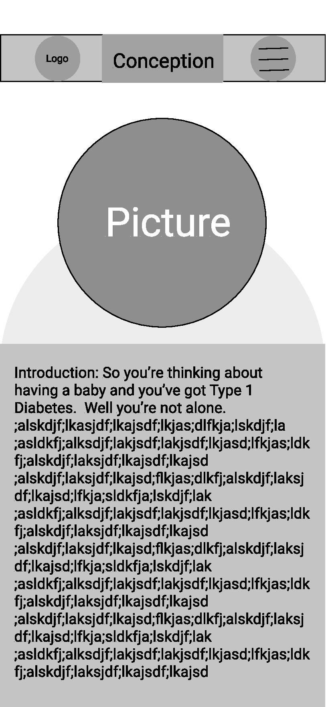
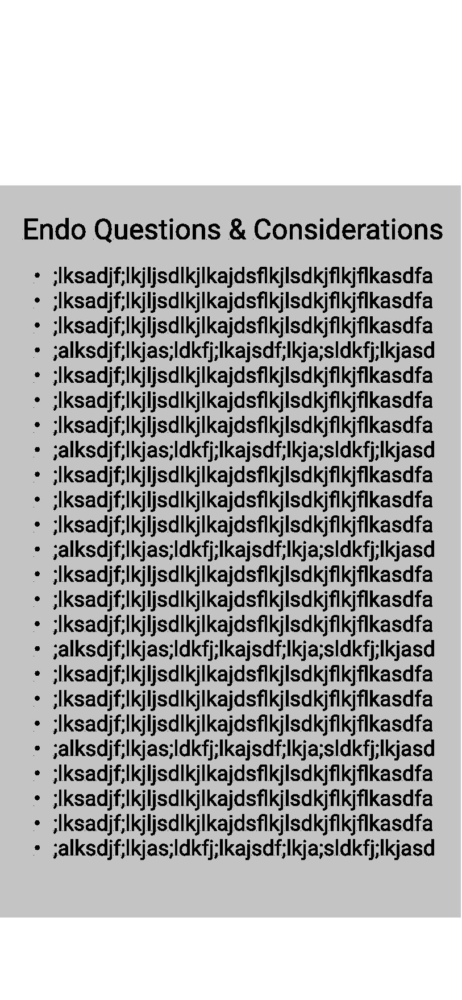
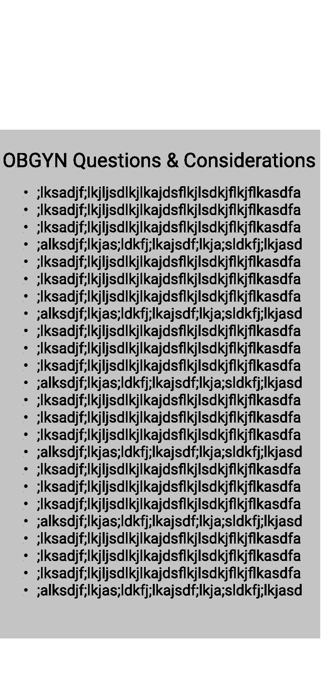
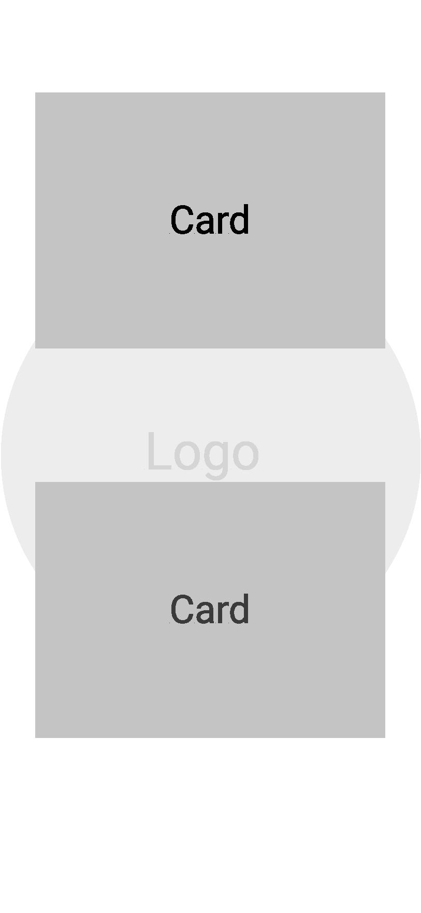
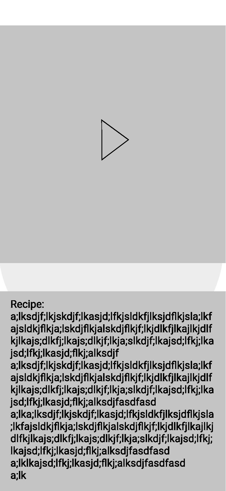
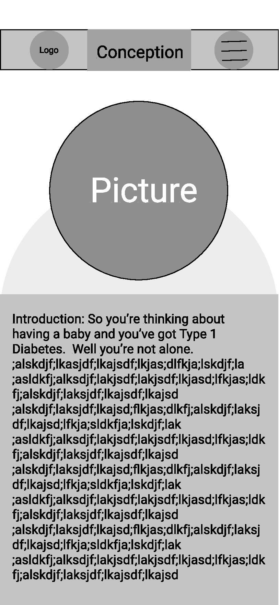
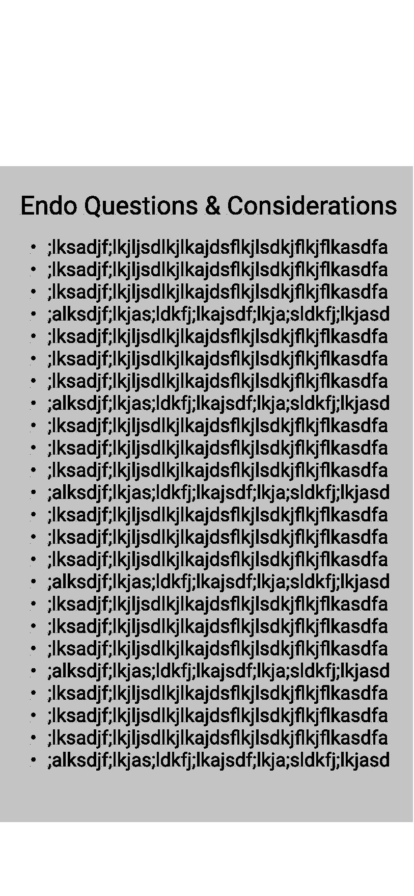
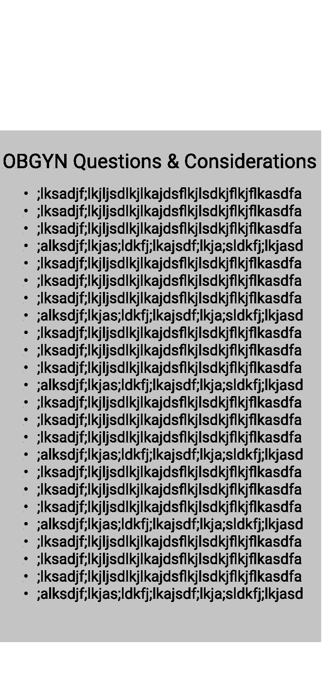
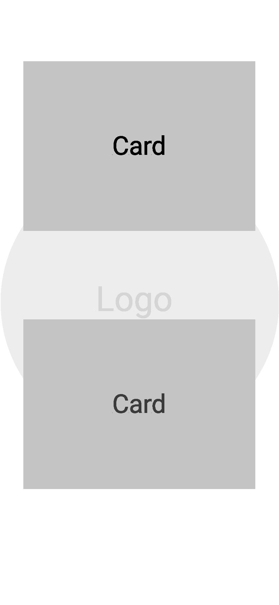
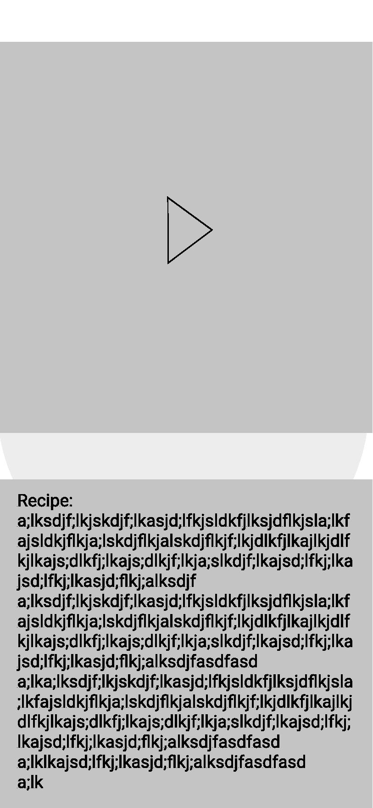